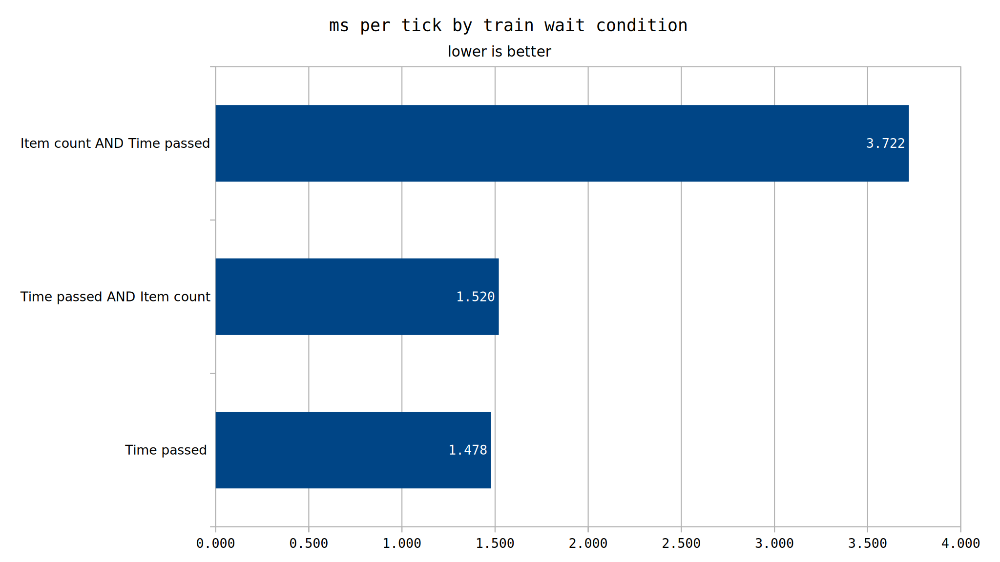

If not using the time passed or inactivity wait conditions, you should put a time passed AND condition preceding the condition you want to check.
Our previous testing conducted in test-000019 covered the basic cases where a single wait condition is applied. However, there are more possibilities that were not covered there. One such case is where multiple wait conditions are applied. In theory, wait conditions joined by the AND operator would not perform any further checks if the first condition was not true. This will be one of the things we aim to test.
Since we are ANDing our conditions, we will no longer need to have any actual loading/unloading performed. If a performance difference is measurable, it also serves as proof that a cost to a particular wait condition is based on continuous checks, rather than checks performed when the attribute changes. An example of this would be the item count condition. There are two possibilities, either all wagons are checked for their item count every tick, or the check only occurs whenever a wagon's content changes (like when an inserter grabs some items).
Another possibility we did not test is the fluid count wait condition. It was theorized to cost as much as item count at that time, though that is baseless speculation. In terms of the number of slots needing to be checked, a fluid wagon would have 1/40 as many "slots". This could yield an interesting performance conclusion. Another possibility is to test fluid count on a train with no fluid wagons. (or item count on a train with no cargo wagons). Such tests are dependent on the first part of this test. If the wait condition cost is based on changes to the condition, testing these attributes won't be viable (due to the highly dissimilar nature of a requisite un/loader for fluids/solids).
For testing, we will take a 5x paste of our previous test. It is here that we will modify the attributes important to our test. We will remove all unloading/loading inserters and infinity chests.
As a dependency for other attributes, we need to first establish the AND condition behavior. We will take out biggest magnitude difference case, item count. There are 3 specific condition cases we need to test. First, we take our basic time passed condition, still at 145 seconds. Next, we take the condition where time passed = 145s AND item count iron-plate = 0. Finally, we flip it to get item count iron-plate = 0 AND time passed = 145s.
This will conclusively tell us if the item count condition is costly even if there are no load/unload events. This first round of tests will be conducted at a duration of 18234 ticks.
If such an event is costly, we will then move on to our fluid count tests.

This data shows a very clear picture that the wait condition is performing checks regardless of there being actual loading/unloading. It also shows us that ANDed conditions don't appear to be further evaluated once the first false is encountered. There is a significant delta between the time passed and time passed + item count, but with the data available here it can't be reasonably known what causes it. The two main speculations are that ANDed conditions are inherently more expensive, or it being that when the first condition eventually becomes true, it checks the item count once.
Now that we know that conditions can be expensive even if there are not changes to whats being checked, we can proceed with the second section of tests.
We will take our same 505 train map and apply the wait conditions we need for this round two.
First we will test a fluid count where water = 0 AND time passed. We will do this for both a train with cargo wagons, and one with fluid wagons.
We will also test the item count condition on trains containing fluid wagons.
The delta between the vanilla time passed and the item count grafted one is pretty curious. We need a reasonable way to test it, to be able to confirm if the ANDing causes the delta or if it is based on the additional item count check. An idea to test such an thing is to put a very large time passed in front. If our benchmark duration is 18234 ticks, we could have a wait condition of 50000 ticks. The secondary item count condition would never run, thereby telling us if ANDing at all is costly.
If ANDing ends up being costly, then we should retest the inventory full/empty case, since it's possible that the ANDing cost would exceed the additional cost to that condition.
Here we can see a significant delta between the item count and fluid count conditions. The fluid count condition is far cheaper than the item count condition, and we also see that the composition of a train affects the performance of these conditions.
This data would appear to show that there is a performance delta associated with ANDing conditions, even if the initial condition always evaluates to false. It is for that reason that this could cause a situation where ANDing the conditions adds more additional overhead than would be saved.
In our past test, the best condition other than time passed and inactivity was inventory full/empty. Since it is the most slight penalty, we should test with preceding time passed conditions with it. If performance here is better than an AND-less condition, it can reasonably be assumed that all more expensive conditions will also benefit from ANDing.
For this test we will go back to our previous test setup, including unloading/loading. We will test 3 scenarios once again, time passed alone, inventory full/empty alone, and time passed AND inventory full/empty. Wait condition will be 145s once again.
Finally, we can see that despite the additional cost to the ANDing of conditions, the cost is less than not ANDing the conditions at all. Therefore, if you need precise wait conditions, it is best to prefix the time period where those conditions will evaluate false with a time passed of that duration.
There is a small penalty overhead to ANDing conditions, but in every tested case, it remains better to prefix expensive wait conditions with time passed.
The fluid count condition was theorized to cost about the same as item count, but in actuality it is far cheaper.